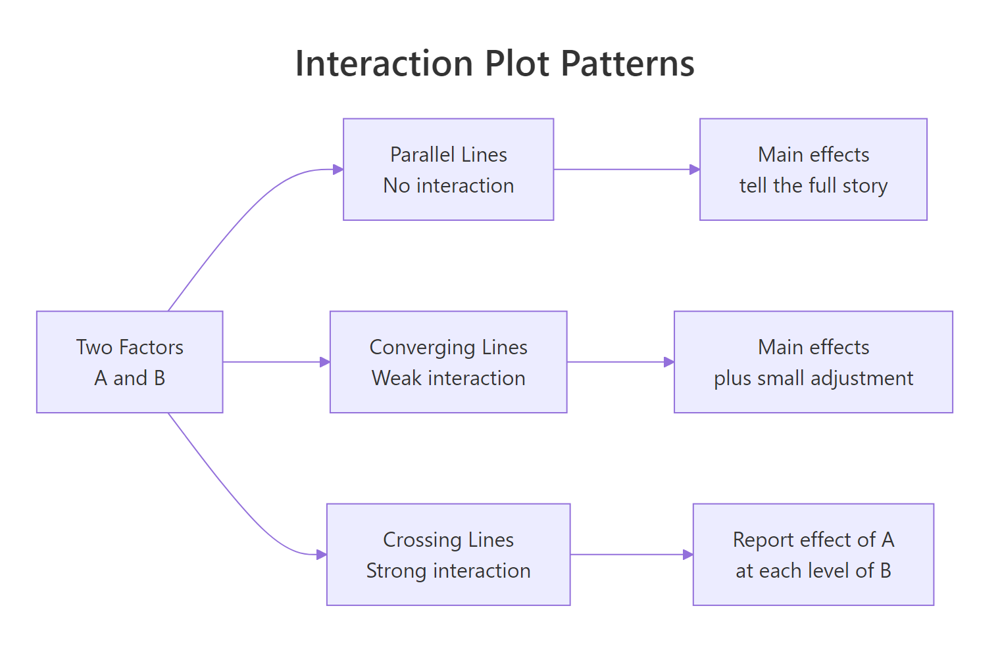
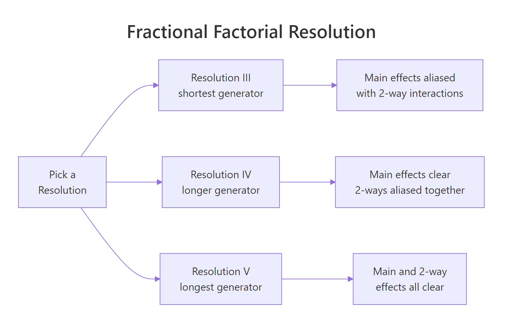
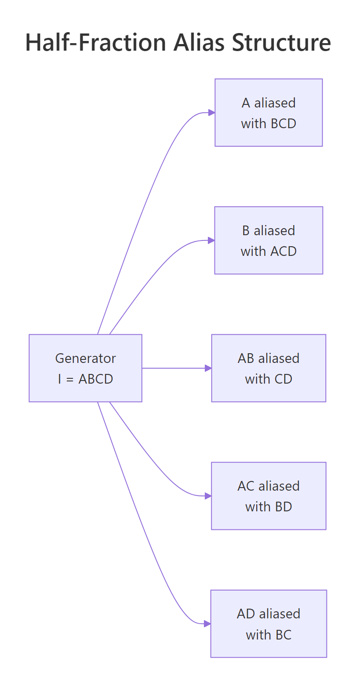

Factorial Designs in R: 2^k Experiments, Main Effects, Confounding, and Interactions
A 2^k factorial design runs every combination of k factors at two levels each, so a single experiment can estimate all main effects and interactions at once. This tutorial walks through a 2^3 chemistry-yield scenario, shows how effects are computed, how interactions change the story, and how half-fractions save runs at the cost of confounded effects.
What is a 2^k factorial design and why use it?
The quickest way to see the value of factorials is to run one. Imagine a chemist optimising a reaction with three factors: Temperature, Pressure, and Catalyst type, each tested at a low and a high setting. A full 2^3 design runs all eight combinations so you can measure how each factor behaves across every setting of the others. Coding the two levels as -1 and +1 makes the arithmetic clean and sets up the effect estimates we compute next.
The eight rows cover every corner of the design cube. The effect summary at the bottom shows Temperature shifts yield by 8 percentage points when it moves from low to high, averaged over every setting of the other two factors. That single experiment already gives you a richer answer than one-at-a-time testing could, and we have not even looked at interactions yet.
aov(), and hand calculations all agree.Try it: Build a 2^2 design for two factors A and B using expand.grid(), then confirm it has four rows.
Click to reveal solution
Explanation: expand.grid() crosses every supplied vector, producing length(A) * length(B) rows. That is exactly the 2^2 enumeration you want.
How do you estimate main effects in R?
The hand calculation from the previous block matches what a linear regression would give you. With +/- coding, the regression coefficient on each factor equals half of that factor's main effect, because the factor changes by 2 units (from -1 to +1) between the two levels. The formula is:
$$\text{Main effect of A} = \bar{y}_{A+} - \bar{y}_{A-} = 2 \times \hat{\beta}_A$$
Where $\bar{y}_{A+}$ and $\bar{y}_{A-}$ are the average responses at the high and low levels of A, and $\hat{\beta}_A$ is the regression slope on the coded variable. Let us fit the model and confirm the doubling rule.
The intercept is the grand mean (60). Each slope (4, 1, 2) equals half the corresponding main effect (8, 2, 4), which matches both the true effects we simulated and the hand calculations from the previous block. This doubling is the most common source of confusion for learners moving between textbook notation and R output.
-1 to +1 is a two-unit change. Multiply by 2 to get the textbook main effect, or divide the effect by 2 to get the regression slope. Either direction works, as long as you are consistent.Try it: Compute Pressure's main effect by hand using mean(), then confirm it equals 2 * coef(fit_main)["Pressure"].
Click to reveal solution
Explanation: The direct subtraction of group means is the definition of a main effect, and it lines up exactly with 2 * coef() because lm() reports the per-unit slope.
How do interactions change the story?
A main effect tells you what a factor does on average. An interaction tells you whether that average hides a more complicated story. In our yield data the Temperature effect looks like a solid +8, but is that true at every level of Catalyst, or does the gain at high Temperature depend on which Catalyst you use? Fitting the full model with interactions reveals the answer.
The full decomposition exposes three meaningful effects: Temperature (8), Catalyst (4), and the Temperature by Catalyst interaction (6). The 6 means that switching from the old Catalyst to the new one boosts the Temperature effect by 6 extra points on top of the 8-point average. Pressure is small, and the three-way term is zero, so the reaction is governed mostly by how Temperature and Catalyst work together.

Figure 1: Three shapes of interaction plots: parallel, converging, and crossing lines.
To see this visually, we plot mean yield for each combination of Temperature and Catalyst.
The two lines diverge sharply as Temperature rises: at low Temperature the two catalysts give similar yields, but at high Temperature the new catalyst jumps ahead. That is the hallmark of a meaningful interaction. If the two lines had been parallel, Catalyst would have contributed an additive shift only, and the main-effects model would tell the whole story.
Try it: Draw an interaction plot for Pressure by Catalyst. Because both main effects are small and the Pressure:Catalyst coefficient is zero, the lines should look nearly parallel.
Click to reveal solution
Explanation: Pressure has a tiny main effect of 2 and no interaction with Catalyst, so the two lines shift up together without crossing. Parallel lines in an interaction plot mean additivity.
How do you test effect significance?
So far we have estimated effects but not asked whether they are statistically distinguishable from noise. To test them with aov(), you need replication, because an unreplicated 2^k has no residual degrees of freedom left over after fitting the saturated model. The fix is to run each combination at least twice, or to set aside high-order interactions as surrogate noise. Let us do the former.
The F-tests confirm what the raw effect sizes suggested: Temperature, Catalyst, and the Temperature:Catalyst interaction are highly significant; Pressure is borderline; the other interactions are noise. Each sum of squares for a 2^k effect equals $n \cdot (\text{effect})^2$ where $n$ is the number of replicates per corner, which is why the ratios look so tidy.
In a half-normal plot, noise effects lie along a straight line through the origin while active effects peel off to the upper right. Here Temperature, Temp:Catalyst, and Catalyst rise above the diagonal, flagging them as real. Every other term clusters near zero, so you would not pursue them in follow-up experiments. This visual check is invaluable for screening experiments where you want to find the vital few among many candidate factors.
Try it: Using effects_tbl, print the three effects with the largest absolute magnitude. These are the ones a half-normal plot would flag as active.
Click to reveal solution
Explanation: order(-abs(...)) ranks by descending magnitude so the strongest effects come first, regardless of sign.
What is a fractional factorial design and when do you need one?
A full 2^k grows quickly. Four factors require 16 runs, seven factors require 128, and ten factors require 1024. When runs are expensive (say, a pilot-plant trial that costs a day each), you want a subset that still answers the question at hand. A half-fraction uses just half the runs by tying one factor's level to a product of the others, and you specify the tie with a generator. The classic one for 2^(4-1) is D = A * B * C.

Figure 2: Fractional factorial resolutions trade generator length for alias clarity.
The eight runs span four factors instead of 16 runs spanning three. You still test every combination of A, B, C, but D's value is no longer free to choose; it is locked to A * B * C. This saves half the runs, at a price we cover in the next section.
D = ABC is Resolution IV, D = AB would be Resolution III.FrF2::FrF2(nruns = 8, nfactors = 4, generators = "ABC") and FrF2::aliases(design.info(...)) to get the design and alias structure in one step. The package also handles blocking, foldovers, and mixed-level designs.Try it: Build a 2^(3-1) half-fraction for factors A, B, C using the generator C = A * B.
Click to reveal solution
Explanation: A 2^(3-1) collapses to four runs, and C is determined by the sign of A*B. That is a Resolution III design, so main effects will be aliased with two-way interactions.
How does confounding (aliasing) affect your conclusions?
The cost of reducing runs is confounding: some effects share a single column in the reduced design, so their contributions to the response cannot be separated. With generator D = ABC, multiplying both sides by any other letter reveals which pairs are tied together. In a 2^(4-1) design the alias chain starts from the defining relation I = ABCD.

Figure 3: Half-fraction 2^(4-1) with generator I = ABCD.
Every main effect is aliased with a three-way interaction (Resolution IV), and every two-way is paired with another two-way. In practice you trust the main-effect estimates because three-way interactions are usually negligible, but you cannot tell whether a significant AB coefficient comes from AB itself, from CD, or from both.
The model recovers the true coefficients we simulated because the confounded partners (CD, BD, BC) happened to be zero. If CD had been non-zero the A:B coefficient would have captured A:B + C:D jointly, and no amount of additional analysis could disentangle them without new runs. That is exactly what confounding means.
Try it: Given the defining relation I = ABCD, which effect is aliased with AB? Use the multiplication rule (multiply both sides of I = ABCD by AB).
Click to reveal solution
Explanation: Multiplying the defining relation I = ABCD by AB gives AB = A^2 B^2 C D = CD, since squared +/- terms equal the identity column of 1s.
Practice Exercises
The exercises below combine multiple concepts from the tutorial. Starter code is runnable as-is; solutions show one valid approach.
Exercise 1: Two-factor cleaning experiment
A cleaning-agent study tests two factors at two levels: Concentration (Low/High) and Time (Short/Long). Each combination is run twice and the response is stain_removal. Compute both main effects and the interaction. Save the fitted model to my_clean_fit and the two main effects to my_main_effects.
Click to reveal solution
Explanation: The ~ Conc * Time shorthand fits both main effects plus the Conc:Time interaction. Concentration has the larger main effect (17.5) while the interaction is small (2.5), meaning the two factors act mostly additively.
Exercise 2: Find the active effects in a noisy 2^4
A 2^4 factorial with 16 runs measures a response called resp. Three effects are truly active, the rest are noise. Use a half-normal plot of the absolute effects to identify the active ones. Save them to my_active_effects as a character vector.
Click to reveal solution
Explanation: With only 16 runs and 15 effects the saturated model uses every degree of freedom, so F-tests are unavailable. The half-normal plot gives a robust visual ranking: A, C, and A:C sit far above the noise line that the remaining 12 effects form near zero.
Exercise 3: Compare full and half-fraction estimates
Using the same 2^4 data from Exercise 2, build a 2^(4-1) half-fraction by keeping only rows where A*B*C*D == 1. Fit a model with main effects plus A:B, A:C, A:D, and save it to my_ff_fit. Compare the coefficients on A, C, and A:C against the full-factorial estimates. They should match closely.
Click to reveal solution
Explanation: With only 8 runs the half-fraction already pins down the three active effects because their aliased partners (BCD, BD, BC in this case) are zero in the simulation. This is why screening experiments often use fractional designs: they identify the vital few without spending budget on runs that would only resolve negligible aliases.
Complete Example: Pilot-plant reactor optimisation
Let us tie every piece together with a two-replicate 2^3 pilot-plant study, the kind reported in chapter 6 of Montgomery's Design and Analysis of Experiments. Factors are Temperature, Pressure, and Catalyst; the response is reactor Yield (%). We simulate it end-to-end, fit the model, diagnose residuals, and predict the optimal corner.
The reduced model drops Temp:Pressure, Pressure:Catalyst, and the three-way term, losing only 6 sum of squares across three degrees of freedom (F = 0.91, p = 0.48). That is statistical permission to simplify. The predictions rank all eight corners by expected yield, and the best setting is Temperature high, Pressure high, Catalyst new (predicted 70.2%). Residual plots show no obvious curvature or heavy tails, so the linear 2^k model fits cleanly.
If budget allowed only 8 runs instead of 16, you would pick a 2^(3-1) Resolution III fraction with generator C = AB, which would confound Catalyst with the Temp:Pressure interaction. Since our analysis found Temp:Pressure to be zero, that fraction would recover the same conclusions at half the cost. That trade-off, resolution versus runs, is the judgement call at the heart of every industrial DOE decision.
Summary
| Concept | What it means | How to compute |
|---|---|---|
| 2^k design | Every combination of k two-level factors | expand.grid(x1 = c(-1,1), ...) |
| Main effect | Mean response shift when a factor flips from - to + | mean(y[x==1]) - mean(y[x==-1]), or 2 * coef(lm()) |
| Interaction | Effect of one factor depends on the level of another | interaction.plot() or lm(y ~ A*B) |
| ANOVA F-test | Tests whether each effect is distinguishable from noise | aov(y ~ A*B*C, data = design) (requires replication) |
| Half-normal plot | Visual test for active effects in unreplicated designs | Sort abs(effects), plot against half-normal quantiles |
| Fractional factorial | Subset of runs that estimates fewer effects with less cost | Generator (e.g. D = A*B*C), FrF2::FrF2() |
| Confounding | Two effects share a column and cannot be separated | Derived from defining relation I = ... |
Key takeaways:
- A 2^k design lets a single experiment estimate all main effects and interactions at once, which is what makes factorials beat one-at-a-time testing.
- With +/- coding, the regression coefficient is half the textbook effect. Multiply by 2 when reporting.
- Replication unlocks the F-test. Unreplicated 2^k designs rely on half-normal plots to identify active effects.
- Fractional factorials trade resolution for runs. Higher resolution keeps more effects untangled but demands longer generators.
- The defining relation determines the alias structure, so picking the generator is an editorial decision about which effects you are willing to confound.
References
- Montgomery, D.C. (2017). Design and Analysis of Experiments, 9th edition. Wiley. Chapter 6. Link
- Box, G., Hunter, W.G., Hunter, J.S. (2005). Statistics for Experimenters, 2nd edition. Wiley. Chapter 5. Link
- Grömping, U.
FrF2: Fractional Factorial Designs with 2-Level Factors (CRAN). Link - Lawson, J. (2015). Design and Analysis of Experiments with R. Chapman & Hall. Chapter 6. Link
- NIST/SEMATECH e-Handbook of Statistical Methods, Section 5.3.3: Choosing an experimental design. Link
- Oehlert, G. (2010). A First Course in Design and Analysis of Experiments. Chapter 15. Link
Continue Learning
- Two-Way ANOVA in R covers the foundations of multi-factor analysis with categorical factors, which is where 2^k designs come from when you start with k = 2. Two-Way ANOVA
- Experimental Design in R walks through the three principles (randomisation, blocking, replication) that every factorial design relies on. Experimental Design
- Interaction Effects in R digs into interpreting interactions in regression models, including visualising them in ggplot2 and reporting effect sizes. Interaction Effects